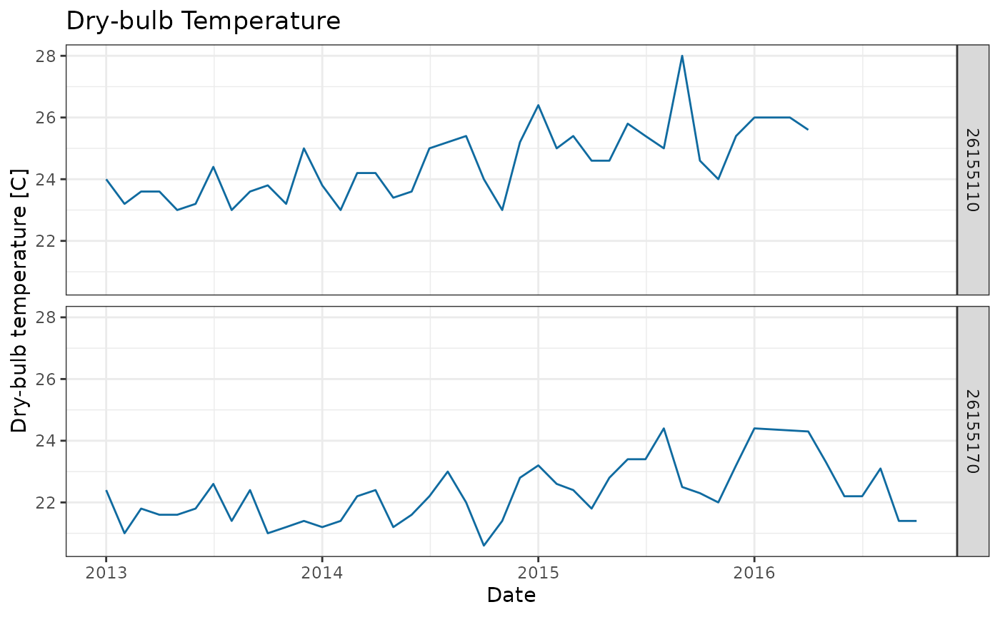

ColOpenData can be used to access open climate data from Colombia. This climate data is retrieved from the Institute of Hydrology, Meteorology and Environmental Studies (IDEAM). The climate module allows the user to consult climate data for any Region of Interest (ROI) inside the country and retrieve the information for each station contained inside.
The available information from IDEAM can be accessed using specific internal tags as follows:
| Tags | Variable |
|---|---|
| TSSM_CON | Dry-bulb Temperature |
| THSM_CON | Wet-bulb Temperature |
| TMN_CON | Minimum Temperature |
| TMX_CON | Maximum Temperature |
| TSTG_CON | Dry-bulb Temperature (Termograph) |
| HR_CAL | Relative Humidity |
| HRHG_CON | Relative Humidity (Hydrograph) |
| TV_CAL | Vapour Pressure |
| TPR_CAL | Dew Point |
| PTPM_CON | Precipitation (Daily) |
| PTPG_CON | Precipitation (Hourly) |
| EVTE_CON | Evaporation |
| FA_CON | Atmospheric Phenomenon |
| NB_CON | Cloudiness |
| RCAM_CON | Wind Trajectory |
| BSHG_CON | Sunshine Duration |
| VVAG_CON | Wind Speed |
| DVAG_CON | Wind Direction |
| VVMXAG_CON | Maximum Wind Speed |
| DVMXAG_CON | Maximum Wind Direction |
Each observation is subject to the availability of stations in the ROI and the stations’ status (active, maintenance or suspended), as well as quality filters implemented by IDEAM.
In this vignette you will learn: 1. How to download climate data
using ColOpenData by three different methods - Download
from named stations - Download from geometry (sf) -
Download from named geometry (municipality or department) 2. How to
aggregate climate data by different frequencies 3. How to plot
downloaded climate data
For this example we will retrieve data for the municipality of Manizales in Colombia. We will download Maximum Temperature (TMX_CON) from 2013 to 2016, to observe the increase in temperature during 2015 and 2016 due to the impact of El Nino (ENSO).
ColOpenData offers three methods to do this, using
three different functions: - download_climate_stations to
download climate data from previously selected stations -
download_climate_geom to download climate data from a
specified geometry (ROI) - download_climate to download
climate data from municipalities’ or departments’ already loaded
geometries
In this example, we will follow the three methods to get the same results, exploring the included functions. We will start by loading the needed libraries.
Disclaimer: all data is loaded to the environment in the user’s R session, but is not downloaded to user’s computer.
Retrieving climate data for a ROI using stations’ data
For this example, we will need to create a spatial polygon around the
municipality of Manizales and use that as our ROI to retrieve the
climate data. To create the spatial polygon we need to introduce the
coordinates of the geometry. For simplicity, we will build a box by
introducing the 4 points which bound the municipality, and transform the
created geometry into an sf object (see sf
library for further details). For visualization we will use
leaflet.
# Define coordinates (bounding box around Manizales)
lat <- c(5.166278, 5.166278, 4.982247, 4.982247, 5.166278)
lon <- c(-75.678072, -75.327859, -75.327859, -75.678072, -75.678072)
# Use sf to create a polygon and turn it into a geometry
polygon <- st_polygon(x = list(cbind(lon, lat))) %>% st_sfc()
# Turn geometry into sf object
roi <- st_as_sf(polygon)
# Plot polygon for reference
leaflet(roi) %>%
addProviderTiles("OpenStreetMap") %>%
addPolygons(
stroke = TRUE,
weight = 2,
color = "#2e6930",
fillColor = "#2e6930",
opacity = 0.6
)With our new ROI, we can make a first exploration to check if there
are any stations contained inside of it, using the function
stations_in_roi
stations <- stations_in_roi(roi)
head(stations)
#> Simple feature collection with 6 features and 20 fields
#> Geometry type: POINT
#> Dimension: XY
#> Bounding box: xmin: -75.51667 ymin: 5.029778 xmax: -75.35611 ymax: 5.1
#> CRS: NA
#> codigo nombre categoria
#> 138 26155220 VILLAMARIA - AUT [26155220] Climática Principal
#> 139 26155210 TORRE 4 - AUT [26155210] Climática Principal
#> 140 26155230 EMAS - AUT [26155230] Climática Principal
#> 266 26155110 AEROPUERTO LA NUBIA [26155110] Sinóptica Principal
#> 749 26155170 TESORITO FINCA - AUT [26155170] Climática Ordinaria
#> 1119 26157090 PLAYA LA [26157090] Limnimétrica
#> tecnologia estado departamento municipio latitud
#> 138 Automática con Telemetría Activa Caldas Villamaria 5.048667
#> 139 Automática con Telemetría Suspendida Caldas Manizales 5.060778
#> 140 Automática con Telemetría Activa Caldas Manizales 5.085250
#> 266 Convencional Activa Caldas Manizales 5.029778
#> 749 Automática con Telemetría Activa Caldas Manizales 5.032222
#> 1119 Convencional Suspendida Caldas Manizales 5.100000
#> longitud altitud fecha_instalacion
#> 138 -75.51389 1906 2004-06-14 00:00:00
#> 139 -75.35611 3787 2004-07-14 00:00:00
#> 140 -75.50714 2211 2004-06-10 00:00:00
#> 266 -75.46992 2104 1968-06-15 00:00:00
#> 749 -75.43833 2325 1992-10-14 19:00:00
#> 1119 -75.51667 250 1984-07-15 00:00:00
#> area_operativa corriente area_hidrografica
#> 138 Area Operativa 09 - Cauca-Valle-Caldas San Juan Magdalena Cauca
#> 139 Area Operativa 09 - Cauca-Valle-Caldas San Juan Magdalena Cauca
#> 140 Area Operativa 09 - Cauca-Valle-Caldas San Juan Magdalena Cauca
#> 266 Area Operativa 09 - Cauca-Valle-Caldas Orinoco Magdalena Cauca
#> 749 Area Operativa 09 - Cauca-Valle-Caldas 0 Magdalena Cauca
#> 1119 Area Operativa 09 - Cauca-Valle-Caldas Quebrada Olivares Magdalena Cauca
#> zona_hidrografica subzona_hidrografica
#> 138 Cauca Río Chinchiná
#> 139 Medio Magdalena Río Guarinó
#> 140 Cauca Río Chinchiná
#> 266 Cauca Río Chinchiná
#> 749 Cauca Río Chinchiná
#> 1119 Cauca Río Chinchiná
#> entidad
#> 138 INSTITUTO DE HIDROLOGIA METEOROLOGIA Y ESTUDIOS AMBIENTALES
#> 139 INSTITUTO DE HIDROLOGIA METEOROLOGIA Y ESTUDIOS AMBIENTALES
#> 140 INSTITUTO DE HIDROLOGIA METEOROLOGIA Y ESTUDIOS AMBIENTALES
#> 266 INSTITUTO DE HIDROLOGIA METEOROLOGIA Y ESTUDIOS AMBIENTALES
#> 749 INSTITUTO DE HIDROLOGIA METEOROLOGIA Y ESTUDIOS AMBIENTALES
#> 1119 INSTITUTO DE HIDROLOGIA METEOROLOGIA Y ESTUDIOS AMBIENTALES
#> fecha_suspension mpio_cdpmp dpto_ccdgo geometry
#> 138 <NA> 17873 17 POINT (-75.51389 5.048667)
#> 139 2010-09-29 17446 17 POINT (-75.35611 5.060778)
#> 140 <NA> 17001 17 POINT (-75.50714 5.08525)
#> 266 <NA> 17001 17 POINT (-75.46992 5.029778)
#> 749 <NA> 17001 17 POINT (-75.43833 5.032222)
#> 1119 1996-04-15 17001 17 POINT (-75.51667 5.1)We can see that in the region there are 129 stations. Different categories are recorded by different stations, and can be checked at the column categoria. To understand the category of each station we can use the definition catalog provided by IDEAM here. Stations under the categories Climática Principal and Climática Ordinaria have records of temperature.
Some stations are suspended, which means they are not taking
measurements at the moment. This information is found at the column
estado, where if suspended the observation would be
Suspendida. Also, at the column fecha_suspension the
observation would be different from NA, since active
stations do not have a suspension date. However, even if a station is
suspended, the historical data (up to the suspension date) can be
accessed.
To filter the stations that recorded information during the desired period, we can delete the stations with suspension dates before 2013.
# Working stations after 2013
w_stations <- stations %>%
dplyr::filter(as.Date(fecha_suspension) > as.Date("2013-01-01") |
estado == "Activa")
# Filtering for categories
cw_stations <- w_stations %>% dplyr::filter(categoria %in%
c("Climática Principal", "Climática Ordinaria"))
# General information of stations
head(cw_stations)
#> Simple feature collection with 6 features and 20 fields
#> Geometry type: POINT
#> Dimension: XY
#> Bounding box: xmin: -75.66667 ymin: 5.017778 xmax: -75.35658 ymax: 5.08525
#> CRS: NA
#> codigo nombre categoria
#> 1 26155220 VILLAMARIA - AUT [26155220] Climática Principal
#> 2 26155230 EMAS - AUT [26155230] Climática Principal
#> 3 26155170 TESORITO FINCA - AUT [26155170] Climática Ordinaria
#> 4 2615500122 LA ESPERANZA ANDALUCIA - AUT [2615500122] Climática Principal
#> 5 26155190 ALGARROBO EL [26155190] Climática Principal
#> 6 26155090 SANTAGUEDA [26155090] Climática Principal
#> tecnologia estado departamento municipio latitud
#> 1 Automática con Telemetría Activa Caldas Villamaria 5.048667
#> 2 Automática con Telemetría Activa Caldas Manizales 5.085250
#> 3 Automática con Telemetría Activa Caldas Manizales 5.032222
#> 4 Automática con Telemetría Activa Caldas Manizales 5.017778
#> 5 Convencional Activa Caldas Manizales 5.066667
#> 6 Convencional Activa Caldas Palestina (Caldas) 5.083333
#> longitud altitud fecha_instalacion area_operativa
#> 1 -75.51389 1906 2004-06-14 00:00:00 Area Operativa 09 - Cauca-Valle-Caldas
#> 2 -75.50714 2211 2004-06-10 00:00:00 Area Operativa 09 - Cauca-Valle-Caldas
#> 3 -75.43833 2325 1992-10-14 19:00:00 Area Operativa 09 - Cauca-Valle-Caldas
#> 4 -75.35658 3316 2017-04-19 19:00:00 Area Operativa 09 - Cauca-Valle-Caldas
#> 5 -75.58333 1202 1992-11-15 00:00:00 Area Operativa 09 - Cauca-Valle-Caldas
#> 6 -75.66667 1010 1964-01-15 00:00:00 Area Operativa 09 - Cauca-Valle-Caldas
#> corriente area_hidrografica zona_hidrografica subzona_hidrografica
#> 1 San Juan Magdalena Cauca Cauca Río Chinchiná
#> 2 San Juan Magdalena Cauca Cauca Río Chinchiná
#> 3 0 Magdalena Cauca Cauca Río Chinchiná
#> 4 0 Magdalena Cauca Cauca Río Chinchiná
#> 5 Qda Santa Barbara Magdalena Cauca Cauca Río Chinchiná
#> 6 Qda Santa Barbara Magdalena Cauca Cauca Río Chinchiná
#> entidad fecha_suspension
#> 1 INSTITUTO DE HIDROLOGIA METEOROLOGIA Y ESTUDIOS AMBIENTALES <NA>
#> 2 INSTITUTO DE HIDROLOGIA METEOROLOGIA Y ESTUDIOS AMBIENTALES <NA>
#> 3 INSTITUTO DE HIDROLOGIA METEOROLOGIA Y ESTUDIOS AMBIENTALES <NA>
#> 4 INSTITUTO DE HIDROLOGIA METEOROLOGIA Y ESTUDIOS AMBIENTALES <NA>
#> 5 FEDERACION NACIONAL DE CAFETEROS <NA>
#> 6 FEDERACION NACIONAL DE CAFETEROS <NA>
#> mpio_cdpmp dpto_ccdgo geometry
#> 1 17873 17 POINT (-75.51389 5.048667)
#> 2 17001 17 POINT (-75.50714 5.08525)
#> 3 17001 17 POINT (-75.43833 5.032222)
#> 4 17001 17 POINT (-75.35658 5.017778)
#> 5 17001 17 POINT (-75.58333 5.066667)
#> 6 17524 17 POINT (-75.66667 5.083333)From the original 129 stations, 40 were working for some or the whole period of interest and collected information for Dry-bulb Temperature (TSSM_CON). It is important to consider that after data collection, some information might be lost due to quality attributes.
With the stations, we can access TMX_CON from 2013 to 2016. To do so,
we can use the function download_climate_stations. This
function has the following parameters:
-
stations:data.framecontaining the stations’ codes. Thisdata.framemust be retrieved from the functionstations_in_roi. -
start_date: character with the first date to consult in the format"YYYY-MM-DD". -
end_date: character with the last date to consult in the format"YYYY-MM_DD". (Last available date is"2023-05-31"). -
tag: character containing climate tag to consult.
max_temperature_stations <- download_climate_stations(
stations = w_stations,
start_date = "2013-01-01",
end_date = "2016-12-31",
tag = "TMX_CON"
)
#> Original data is retrieved from the Institute of Hydrology, Meteorology
#> and Environmental Studies (Instituto de Hidrología, Meteorología y
#> Estudios Ambientales - IDEAM).
#> Reformatted by package authors.
#> Stored by Universidad de Los Andes under the Epiverse TRACE iniative.
head(max_temperature_stations)
#> station longitude latitude date hour tag value
#> 1 26155110 -75.46992 5.029778 2013-01-01 19:00:00 TMX_CON 22.2
#> 2 26155110 -75.46992 5.029778 2013-01-02 19:00:00 TMX_CON 21.0
#> 3 26155110 -75.46992 5.029778 2013-01-03 19:00:00 TMX_CON 23.0
#> 4 26155110 -75.46992 5.029778 2013-01-04 19:00:00 TMX_CON 22.8
#> 5 26155110 -75.46992 5.029778 2013-01-05 19:00:00 TMX_CON 23.6
#> 6 26155110 -75.46992 5.029778 2013-01-06 19:00:00 TMX_CON 22.4The returned tidy data.frame includes: individual and
unique station code, longitude, latitude, date, hour, tag requested and
value recorded at the specified time. The tidy structure reports a row
for each observation, which makes the subset and plot easier.
To plot a time series of the stations’ data we can use
ggplot2 as follows:
ggplot(data = max_temperature_stations) +
geom_line(aes(x = date, y = value, group = station), color = "#106ba0") +
ggtitle("Max Temperature in Manizales by station") +
xlab("Date") +
ylab("Temperature [°C]") +
theme_bw() +
facet_grid(rows = vars(station))
As we can see, only two stations have data for the selected period,
and we have missing information in some periods. Additionally, by having
the data daily we cannot easily see big changes along time. To aid this
issue, we will use the aggregation function
aggregate_climate, which aggregates climate data by time.
This function takes by parameter the desired aggregation.
max_temperature_month <- max_temperature_stations %>% aggregate_climate("month")
ggplot(data = max_temperature_month) +
geom_line(aes(x = date, y = value, group = station), color = "#106ba0") +
ggtitle("Dry-bulb Temperature") +
xlab("Date") +
ylab("Dry-bulb temperature [C]") +
theme_bw() +
facet_grid(rows = vars(station))
Retrieving climate data for a ROI
To retrieve climate data for any ROI in the country, without manually
extracting the stations’ data, we can use the function
download_climate_geom. The function has the following
parameters:
-
geometry:sfgeometry containing the geometry for a given ROI. This geometry can be either aPOLYGONorMULTIPOLYGON. -
start_date: character with the first date to consult in the format"YYYY-MM-DD". -
end_date: character with the last date to consult in the format"YYYY-MM_DD". (Last available date is"2023-05-31"). -
tag: character containing climate tag to consult.
We will use the same ROI created for the previous example, and add
the aggregation for month. We can add the aggregation function to the
workflow using the pipe operator %>%.
max_temperature_roi <- download_climate_geom(
geometry = roi,
start_date = "2013-01-01",
end_date = "2016-12-31",
tag = "TMX_CON"
) %>% aggregate_climate("month")
ggplot(data = max_temperature_roi) +
geom_line(aes(x = date, y = value, group = station), color = "#106ba0") +
ggtitle("Dry-bulb Temperature") +
xlab("Date") +
ylab("Dry-bulb temperature [C]") +
theme_bw() +
facet_grid(rows = vars(station))
Retrieving climate data for municipality
To make the download process even easier, and avoid the creation of already known geometries like municipalities or departments, ColOpenData offers an extra function to download data using the areas’ DIVIPOLA code.
DIVIPOLA codification is standardized for the whole country, and contains department’s and municipalities’ codes. Departments have two digits for individual identification, while municipalities have five. The codes for each municipality and department can be consulted in the following table.
To get the DIVIPOLA code of a municipality or department we can use
the auxiliary functions divipola_municipality_code and
divipola_department_code in ColOpenData.
To retrieve a municipality code we must include the department name and
the municipality name. This is to consider repetition in municipalities’
names across departments.
divipola_municipality_code("CALDAS", "MANIZALES")
#> [1] "17001"To replicate our previous example we only need the code for Manizales, which is “17001”. This means the code for the department Caldas (where Manizales is located) is “17” and the code for Manizales inside that department is “001”.
The function download_climate will require almost the
same arguments as download_climate_geom, but instead of an
sf object, it will take a character containing the DIVIPOLA
code:
-
code: character with the DIVIPOLA code for the area. -
start_date: character with the first date to consult in the format"YYYY-MM-DD". -
end_date: character with the last date to consult in the format"YYYY-MM_DD". (Last available date is"2023-05-31"). -
tag: character containing climate tag to consult.
max_temperature_mpio <- download_climate(
code = "17001",
start_date = "2013-01-01",
end_date = "2016-12-31",
tag = "TMX_CON"
) %>% aggregate_climate("month")
ggplot(data = max_temperature_mpio) +
geom_line(aes(x = date, y = value, group = station), color = "#106ba0") +
ggtitle("Dry-bulb Temperature") +
xlab("Date") +
ylab("Dry-bulb temperature [C]") +
theme_bw() +
facet_grid(rows = vars(station))
As stated at the beginning of this vignette, the three methods display the same results.
Disclaimer
Data availability is subdued to station’s measurements and quality filters. In most cases, this leads to a lower amount of data, considering the extensive amount of climate stations.
-
Temporal aggregation is only available for some tags and is limited to the ones who have a specific methodology of aggregation reported by IDEAM. The daily, monthly and annual aggregation is available for:
-
TSSM_CON: Dry-bulb temperature -
TMX_CON: Maximum temperature -
TMN_CON: Minimum temperature -
PTPM_CON: Precipitation -
BSHG_CON: Sunshine duration
-
Temporal and spatial interpolation are not included in this version of ColOpenData.